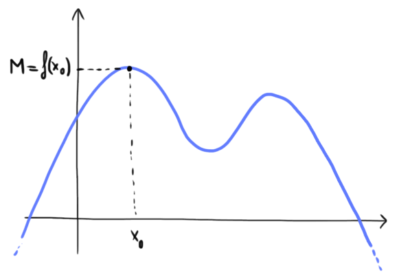
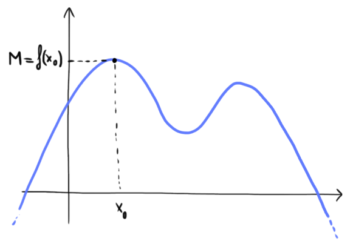
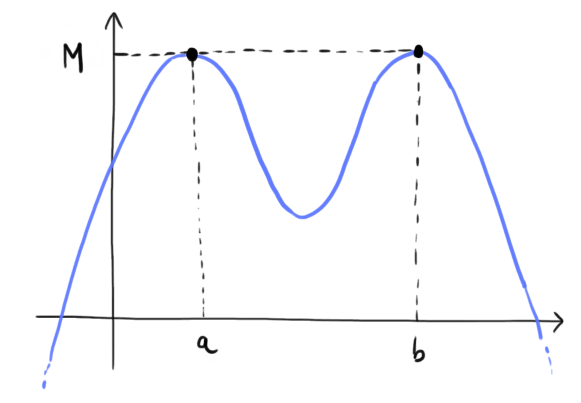
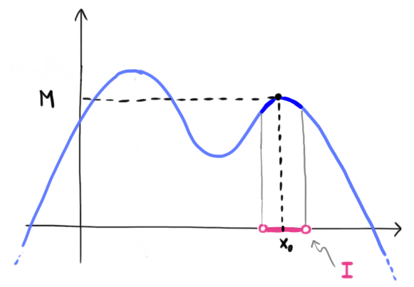
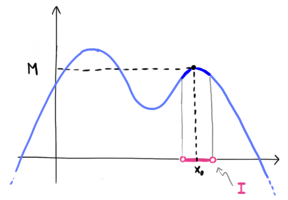

Definizione (caso assoluto)

In maniera informale possiamo dire che
Data una funzione \(f\) avente dominio \(D\), un punto \(x_0 \in D\) si dice punto di massimo assoluto
per la funzione \(f\) se
Il valore \(M = f(x_0)\) assunto dalla funzione in \(x_0\) si dice massimo assoluto della funzione.
\[
f(x) \leq f(x_0)
\]
per ogni \(x \in D\)

In maniera informale possiamo dire che
- il massimo \(M\) è l'output più grande assunto dalla funzione.
-
un punto di massimo \(x_0\) è un input in corrispondenza del quale la funzione assume
il valore massimo \(M\).
Osserviamo che possono esistere diversi punti di massimo.

.png)
Definizione (caso relativo)

In maniera informale possiamo dire che il massimo relatico \(M\) è l'output più grande assunto dalla funzione nell'intorno \(I\).
Fuori da \(I\) la funzione potrebbe assumere valori maggiori di \(M\).
Data una funzione \(f\) avente dominio \(D\), un punto \(x_0 \in D\) si dice punto di massimo relativo
per la funzione \(f\) se esiste un intorno \(I\) di \(x_0\) tale che
Il valore \(M = f(x_0)\) assunto dalla funzione in \(x_0\) si dice massimo relativo della funzione.
\[
f(x) \leq f(x_0)
\]
per ogni \(x \in I\)

In maniera informale possiamo dire che il massimo relatico \(M\) è l'output più grande assunto dalla funzione nell'intorno \(I\).
Fuori da \(I\) la funzione potrebbe assumere valori maggiori di \(M\).